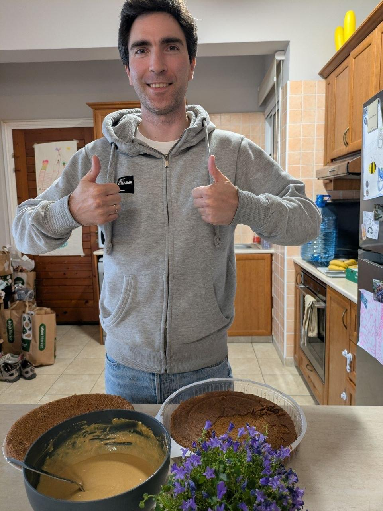
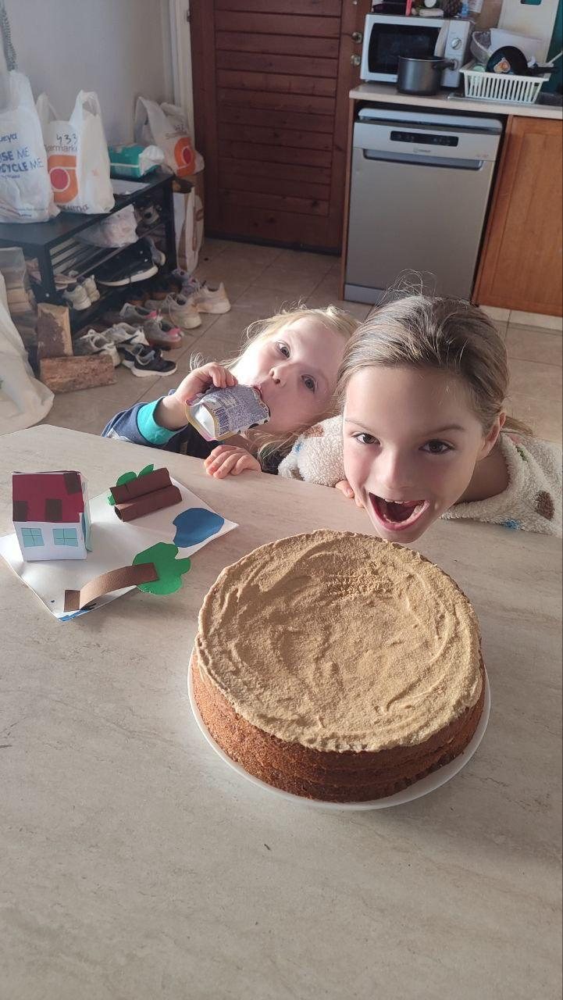
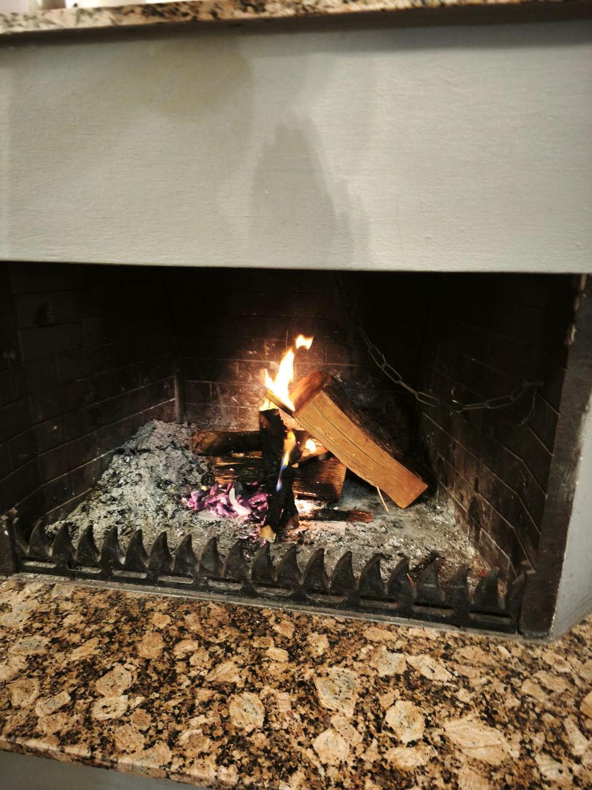

Στο γραφείοВ офисе
Τρώω στο εστιατόριο του γραφείου.Ем в столовой в офисе.
ΕΛΛΗΝΙΚΑ Β1ГРЕЧЕСКИЙ B1
Απλό φαγητό τις καθημερινές, μικρές γιορτές στο σπίτιПростая еда в будни и маленькие праздники дома
Παρουσίαση στα ελληνικάПрезентация на русском языке
ΚΑΘΗΜΕΡΙΝΑКАЖДЫЙ ДЕНЬ
Γενικά, δεν μου αρέσει πολύ να περνάω χρόνο μαγειρεύοντας κάθε μέρα.Вообще я не очень люблю тратить время на ежедневное приготовление еды.
Τρώω στο εστιατόριο του γραφείου.Ем в столовой в офисе.
Μερικές φορές παραγγέλνω έτοιμο φαγητό.Иногда заказываю готовую еду.
ΓΙΟΡΤΕΣПРАЗДНИКИ

Μερικές φορές, ειδικά στις γιορτές, μου αρέσει να φτιάχνω μια τούρτα.Иногда, особенно по праздникам, мне нравится делать торт.
ΛΙΓΗ ΥΠΟΜΟΝΗНЕМНОГО ТЕРПЕНИЯ

Βάζω την κρέμα ανάμεσα στα παντεσπάνια.Промазываю коржи кремом.
Αφήνω την τούρτα στο ψυγείο όλη τη νύχτα, για να απορροφήσουν τα παντεσπάνια την κρέμα.Оставляю торт в холодильнике на ночь, чтобы коржи пропитались кремом.
Την επόμενη μέρα μπορούμε να την απολαύσουμε!На следующий день можно наслаждаться! =)
ΣΤΟ ΣΠΙΤΙДОМА

Στο σπίτι έχουμε τζάκι. Μερικές φορές ψήνουμε εκεί λαχανικά ή marshmallows.Дома у нас есть камин. Иногда мы запекаем там овощи или жарим маршмеллоу.
Έτσι το μαγείρεμα γίνεται μια μικρή οικογενειακή γιορτή.Так готовка становится маленьким семейным праздником.